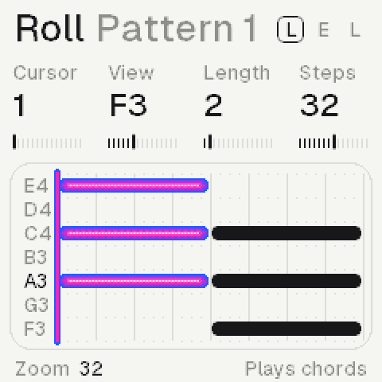
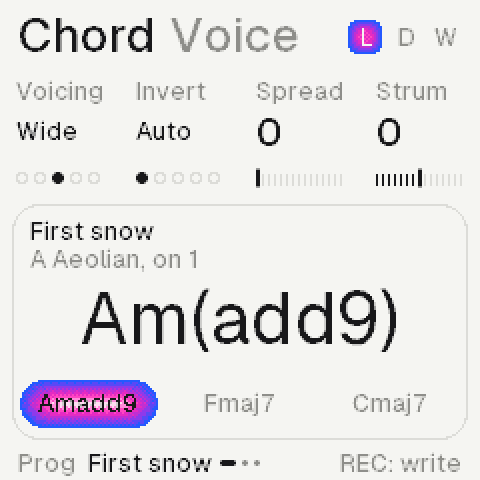
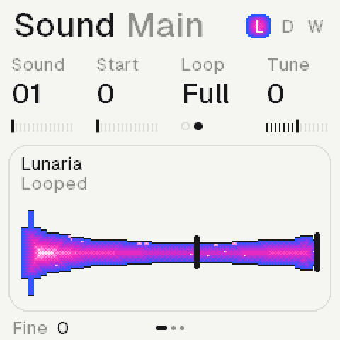
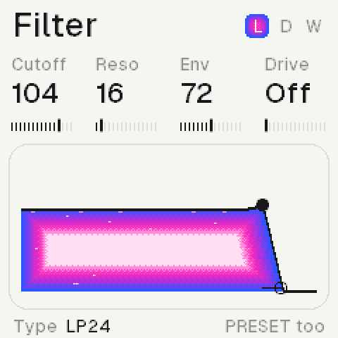
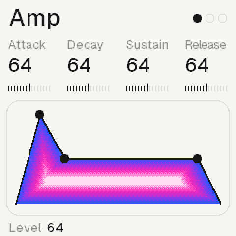
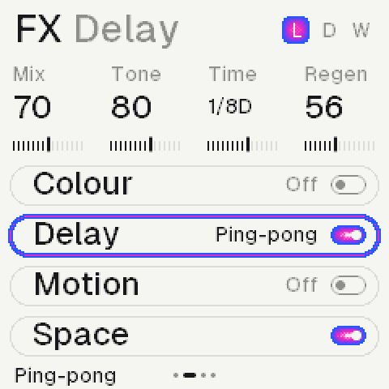

Introduction
Demake turns the M‑VAVE FM‑1 into an ambient lofi machine: three synths on 64 recordings, a roll each, a chord machine, lofi effects and long reverbs.
 Home: the three synths, a scene for the sound.
Home: the three synths, a scene for the sound.
SynthsThree, each its own roll, length and effects
Sounds64 recordings, built in
Voices12, shared; half on the second core
Progressions16, and four of your own
Version0.1, on the install page
The emulator
The same firmware runs in the browser. Press Power on, then play the panel with the mouse or the computer's keys.
Z to /, S to 'The lower keys, F3 to A4
Q to OThe upper keys, B4 to G5
1 to =The twelve buttons, FX to REC
[ ]OCT− and OCT+
ArrowsUp and down SELECT, left and right ALGORITHM
A knobDrag it up or down, or scroll over it
Shift clickHolds a button down
In the home page's screens, once it plays, the screen is live: a page pressed opens it, a value scrolled turns its knob.
Installing
From the installer page, over USB, in Chrome or Edge on a computer.
- 1Plug the FM‑1 in with a cable that carries data and switch it on.
- 2Open the installer and press Connect; allow MIDI.
- 3Press Install and wait about a minute, until it says done.
- 4A dark screen: hold OCT− while switching on, then install again.
The same page takes the FM‑1 back to M‑VAVE's own V15.
The panel
Each button opens its page. K1 to K4 turn the four values under them; ALGORITHM the one at the foot.
FXEffects: colour, media, motion, space
SELFilter
ENVAmp: the envelope and the level
LFOLFO (drawn; its sound comes later)
EDITSound: the recording, start, loop, tune
GLOGlobal: the reverb, the echo, the theme
HOMEHome: levels, sends, tempo; the scene
ARPChord: the progression; the keys play chords
SEQRoll: this synth's own sequence
SAVEHeld: the songs (saving comes later)
PLAY, RECPlay the rolls and chords; record the keys
OCT− OCT+The octave; with a note held, delete or copy
SELECTThe synth
PRESETSIts sound, on any page
ALGORITHMThe rows on FX and GLO; the foot's value
K1 to K4The four values on top
MASTERThe volume
The rules
Three, the same on every page.
Tap, againA page button opens its page; again, its next row
Hold + ALGOHolding the page's button, ALGORITHM changes a row's type
Hold, then actA held key or chord: the knobs change it, OCT− deletes, OCT+ copies
The pages
The same layout on each: the title and its row, four values, a card, the foot.

Roll: a synth's notes and length.

Chord: the progression, the chord now.

Sound: the recording and its loop.

Filter: the response, its cutoff.

Amp: the envelope, its points.

FX: four rows, a synth each.
Keys and sounds
The keys play the synth SELECT picks; PRESETS steps through its sounds.
SELECTSynth 1, 2 or 3; the head shows S F G, the current boxed
PRESETSThe next recording, on any page
OCT− OCT+Two octaves down or up
On ChordEach key plays a chord instead
The rolls
Each synth has its own roll and length, so the three loop against each other.
The pad's 32 steps; the cursor lit.
A keyStopped: writes at the cursor, then moves it on
Held + K1Moves the note; K2 its pitch, K3 its length
Held + ALGOIts velocity
Held + OCT−Deletes it; OCT+ copies it after itself
K1 K2 K3The cursor, the view, the pen's length
K4This synth's length, 1 to 64 steps
PLAYPlays all three; the keys play along
PLAY + RECRecords the keys from their nearest step
Chords
On Chord a key is a chord: the song key's chord built on it. PLAY runs the progression.
First snow in A Aeolian.
A keyIts chord: A gives Am7, F gives Fmaj7
ALGORITHMThe progression: 16 presets, then User 1 to 4
Voice rowVoicing, inversion (Auto moves least), spread, strum
Key rowKey, mode, chord length, rhythm
SEQ + ALGOHow this synth follows: chords, key, chord, root, free
The first song: the pad plays the chords, the piano follows the key, the third synth the root.
Writing progressions
Four of your own, after the presets. REC armed is the switch: without it the keys only play.
- 1On Chord, turn ALGORITHM to User 1, or start from a preset.
- 2Stopped, press REC: the foot says the keys write chords.
- 3Each key writes its chord at the cursor and moves it on.
- 4Hold one: K1 moves it, K2 its quality, K3 its bars, K4 its bass.
- 5ARP held: K1 the cursor; OCT+ prints it into the synth's roll.
Effects
Four rows a synth. ALGORITHM moves through them; hold FX and turn it to change a row's effect.
Each row names its effect.
ColourSaturate, crush, lossy (a codec's smear), noise
MediaTape, cassette, VHS
MotionChorus, vibrato, drift
SpaceThe sends to the reverb and the echo, the pan
Each effect names its own four knobs: crush shows bits, tone, rate and jitter.
Reverbs and echo
Shared by the three, on GLO. Hold GLO and turn ALGORITHM to change the type.
RoomShort, close
HallWide, long
SpaceBright, nearly endless
HazeDark, deep, slowly moving
BloomA new sound swells into it
LofiEleven kHz, eight bits, wow
Tape echoDarkening repeats
GrainsA cloud of what you played: size, density, texture
Filter and envelope
Every voice has both. Hold SEL and turn ALGORITHM for the filter's type.
TypesLP24, LP12, HP, BP, notch, peak, vowel, off
Filter knobsCutoff, resonance, envelope, drift
VowelThe cutoff glides through u, o, a, e, i
Amp knobsAttack, decay, sustain, release; ALGORITHM the level
The sounds
Sixty-four recordings, built in: nothing to load. Home shows a landscape for the kind of sound.
SoundWhich recording (K1), or PRESETS anywhere
StartWhere it starts: past its attack, for a soft one
LoopFull, or once through
TuneIn semitones; ALGORITHM fine, in cents
ScenesPeaks, a lake, a coast, the night
Not built yet
On the pages already, coming in the next versions.
SavingSongs, sounds and progressions kept on the FM‑1
PatternsEight a song, switched with HOME held
LFOIts sound (the page draws it already)
LayerA second recording under a sound
UndoGLO and OCT−, sixteen steps back
Credits and licence
GPL-3.0, as its platform. The recordings are the author's own.
PlatformThe open FM‑1 platform: Felucca, CS‑1, Dinghy, SLOOP, FM‑106
InstallerFelucca's update code, Leo Kuroshita
TypeGeist (SIL OFL 1.1); Kiloy as renders only
MarksM‑VAVE and FM‑1 are their owners'; not made by M‑VAVE